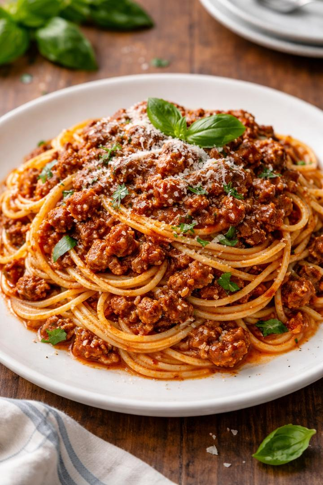

Home
Spaghetti Bolognese

Discription
Spaghetti Bolognese is a classic Italian pasta dish made with spaghetti noodles served with a rich and flavorful meat sauce. It’s a comforting and satisfying meal that’s easy to prepare and perfect for lunch or dinner.
Ingredients
- Spaghetti pasta
- Ground beef
- Onion
- Tomato sauce
- parmesan cheese
- Garlic
- Olive oil
- Salt
- Black pepper
Steps
- Bring a pot of salted water to a boil and cook the spaghetti according to the package instructions
- Heat olive oil in a pan over medium heat
- Add chopped onion and garlic and cook until soft.
- Add the ground beef and cook until browned.
- Pour in the tomato sauce and stir well.
- Season with salt and black pepper and let the sauce simmer for about 10–15 minutes.
- Drain the cooked spaghetti.
- Serve the meat sauce over the spaghetti.
- Sprinkle Parmesan cheese and basil on top before serving.